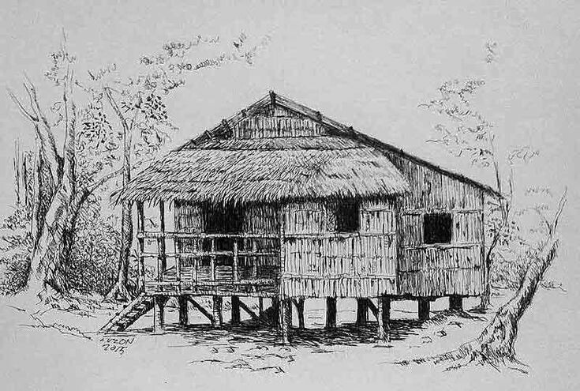
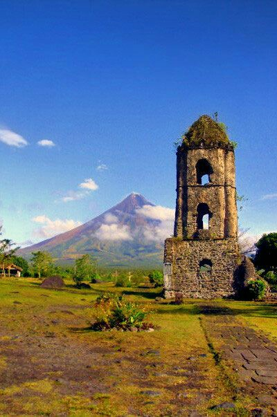

The Baybayin Script. Several scripts were developed and used by pre-hispanic Filipinos.
The History of the Philippines
The Philippines is an archipallegic nation in South-East Asia.
The country's inhabitants are composed mostly of Austronesian peoples like Ilocanos, Tagalogs, Cordillerans, Cebuanos, etc;
but there are significant number of minorities such as Negritos, Chinese, Spanish, mestizos,
and others.
Although the Philippines is mostly christian, there is also a sizable Filipino Muslim minority.
Other Religions are also present, and like other democracies, Filipinos enjoy Religious Freedom.
Religous secularism? Well, not so much.
These, and among other factors, makes the Filipino culture among the most complex in the world.
Spanish explorer Ruy Lopez de Villalobos, during his expedition in 1542, named the islands of Leyte and
Samar "Felipinas" after Philip of Spain. Eventually the name "Las Islas Filipinas" would be used to cover
the archipelago's Spanish possessions. Before Spanish rule was established, other names such as Islas del Poniente and
San Lazaro, were also used by the Spanish to refer to islands in the region.
During the Philippine Revolution, the Malolos Congress proclaimed the establishment of the Republica Filipina.
From the period of the Spanish-American War and the Philippine-American War until the Commonwealth period, American Colonial authorities referred to the country
as the Philippine Islands.
The full title of the Republic of the Philippines was included in the 1935 constitution as the name of the future independent state.
There is evidence of early hominins living in what is now the Philippines as early as 709 thousand years ago. A small
number of bones from Callao Cave potentially represent a species, Homo luzonensis, that lived around 50 to 67 thousand
years ago. The oldest modern human remains found on the islands are from Tabon Caves of Palawan is Uranium-Dated
to 47 thousand years ago, more or less 11 thousand years.
The Tabon Man is presumably a Negrito, who were among the nation's earliest Homo sapien inhabitants.
The first Austronesians reached the Philippines at around 2200 BC, settling the Batanes Islands and Northern Luzon
from Taiwan. From there, they rapidly spread downwards to the rest of the Philippines and Southeast Asia. Austronesians
were the most accomplished sailors of that time, and their ships were the most technologically
advanced in the world, capable of blue water sailing and eventually settling most of the Pacific Islands and
even reached and settled as far out as Madagascar.
Jade artifacts have been found dated to 2000 BC, with the lingling-o jade items crafted in Luzon
made using raw materials from Taiwan.
The earliest known surviving written record found in the Philippines is the Laguna
Copperplace Inscription. By the 1300s, a number of the large coastal settlements had emerged
as trading centers, and became the focal point of societal changes. Some polities had exchanges
with other states across Asia. Trade with China is believed to have begun during the Tang dynasty,
but grew more extensive during the Song dynasty. By the second millennium CE, some philippine polities were known
to have sent trade delegations which participated in the Tributary system enforced by the Chinese imperial court.
Philippines and it's neighbors

Indian cultural traits, such as linguistic terms and religious practices, began to spread
within the Philippines during the 10th century, likely through the Hindu Majapahit empire.
By the 15th century, Islam was established in the Sulu Archipelago and spread from there.
Polities founded in the Philippines from the 10th to 16th centuris include Manynila, Tondo, Namayan,
Pangasinan, Cebu, Butuan, Maguindanao, Lanao, Sulu, and Ma-i.
The early polities were typically made up of three-tier social structure: a nobility class, a class of
"freeman", and a class of dependent debtor-bondsmen. Among the nobility were leaders called "Datus",
responsible for ruling autonomous gorups called "barangay" or "dulohan". When these barangays banded
together, either to form a larger settlement or a geographically looser alliance group, the more esteemed
among them would be recognized as a "paramount datu", rajah, or sultan which headed the community state.
There is little evidence of large-scale violence in the archipelago prior to the 2nd millennium AD, and
throughout these periods population density is thought to have been low.
In 1521, Ferdinand Magellan arrived in the area and claimed the islands for Spain. Colonization
began when Spanish explorer Miguel Lopez de Legazpi arrived from Mexico in 1565. In 1571, Spanish Manila
became the capital of the Spanish East Indies, which also encompassed Spanish territories in Asia and the
Pacific.
The Spanish considered their war with the Muslims in Southeast Asia an extention of the Reconqista.
Spanish rule brought most of what is now the Philippines into a single unified administration. From
1565 to 1821, the Philippines was governed as part of the Viceroyalty of New Spain in Mexico. After the
Mexican War of Independence, the Philippines was administered directly by Madrid.
Manila was an important part of Spain's trans-Pacific trade.
Under Spanish rule, Catholic missionaries converted most of the lowland inhabitants to Christianity. They also
foundedd schools, a univeristy, hospitals, and churches. The Philippines' population
expanded rapidly during the Spanish era.
Colonial Difficulties

Keeping the Philippines was very expansive to the Spanish. Putting down indigenous revolts, external military threats,
and piracy nearly bankrupted the colonial treasury.
Increasing difficulty in governing the Philippines led the Royal Fiscal of Manila writing to King Charles III of Spain,
advising him to abandon the colony.
The Philippines survived on an annual subsidy provided by the Spanish Crown, usually paid
through the provisions of 75 tons of silver bullion being sent from the Americas. Financial
constraints meant the 200-year-old fortifications in Manila did not see significant improvement
after being first built by the early Spanish colonizers. The British occupied Manila from 1762 to 1764 during the Seven
Years' War, however they found great difficulty extending their conquest outside of Manila. The colony
was restored to Spain after the 1763 Treaty of Paris. The Spanish-Moro conflict lasted for several
hundred years. In the last quarter of the 19th century, Spain conquered portions of Mindanao
and the Moro Muslims in the Sultanate of Sulu formally recognized Spanish sovereignity.
In the 19th century, Philippine ports opened to the world trade and shifts started occuring
within the Filipino society. Many Spaniards born in the Philippines and those of mixed ancestry
were wealthy, and an influx of Hispanic American Immigrants opened up government positions traditionally held by
Spaniards born in the Iberian Peninsula.
Revolutionary sentiments were stoked in 1872 after three activist Catholic priests were accused of sedition and executed.
This would inspire a propaganda movement in Spain, organized by Marcelo H. del Pilar, Jose Rizal, and Mariano Ponce, lobbying for
political reforms in the Philippines. Rizal was eventually executed on December 30, 1896, on charges of rebellion. This radicalized
many who had previously been loyal to Spain. As attempts at reform met with resistance, Andres Bonifacio in 1892 established
the militant secret society called the Katipunan who sought
independece from Spain through armed revolt.
In 1898, the Spanish-American War began and reached the Philippines. Aguinaldo returned, resumed the revolution, and declared
Philippine independence from Spain on the 12th of June 1898.
The Philippines had been ceded by Spain to the United States after the war. The Philippine-American War soon broke out.